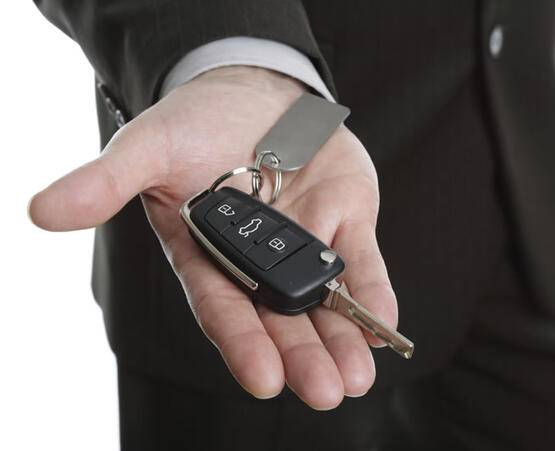

Виготовлення ключа авто без оригіналу в Ужгороді

Якщо ви загубили всі ключі від авто, не маєте дубліката, ключі лишилися у попереднього власника або в когось далеко — ми зробимо новий ключ без жодного оригіналу. Виготовлення складається з двох частин: нарізка леза (за замком запалювання або за кодом з VIN) і програмування чіпа (через OBD-роз'єм або зчитування блоку іммобілайзера). Працюємо з усіма марками і поколіннями — від класичних механічних ключів 90-х до сучасних smart-key з AES-шифруванням.
Втратили всі ключі від авто?
Зателефонуйте — підкажемо ціну і час за вашою моделлю
Як ми робимо ключ без оригіналу
- Нарізка леза. Розбираємо замок дверей або запалювання, зчитуємо геометрію штифтів і нарізаємо лезо на спеціальному верстаті. Для деяких марок (Audi, Mercedes) лезо можна нарізати за кодом з VIN — це швидше і не вимагає розбирання замка.
- Підбір чіпа. Визначаємо тип іммобілайзера авто і ставимо потрібний чіп у корпус — Texas, Philips, Megamos, HITAG, або H-chip.
- Програмування. Підключаємо програматор до OBD-роз'єму, зчитуємо PIN-код або CS (Component Security) з блоку, записуємо новий ключ у пам'ять іммобілайзера. Для частини сучасних авто (BMW CAS4+, Mercedes FBS3) знімаємо блок з машини і працюємо з ним прямо.
- Тестування. Заводимо двигун новим ключем, перевіряємо центральний замок, кнопки.
Ціни на виготовлення ключа без оригіналу
| Категорія авто | Ціна | Час |
|---|---|---|
| Бюджетні моделі (Renault, Dacia, Hyundai, Kia до 2014) | від 2500 грн | 1-2 год |
| VAG до 2013 (VW, Audi, Skoda, Seat — ID48) | від 3500 грн | 2-3 год |
| VAG MQB з 2013 (Megamos AES) | від 5500 грн | 3-5 год |
| BMW EWS, CAS1-CAS3 | від 4500 грн | 2-3 год |
| BMW CAS4/CAS4+, FEM/BDC | від 5500 грн | 3-4 год |
| Mercedes-Benz FBS3, FBS4 | від 6500 грн | 3-5 год |
| Toyota / Lexus G-chip | від 4500 грн | 2-3 год |
| Toyota / Lexus H-chip (DST-AES, з 2014) | від 6500 грн | 3-5 год |
| Ford, Mazda (HITAG-Pro) | від 5000 грн | 2-3 год |
| Преміум-авто з картою (Renault Megane III, IV) | від 4500 грн | 2-3 год |
* Якщо потрібен виїзд або евакуатор — окремо. Точна ціна після уточнення моделі і року.
Які документи потрібні
- Техпаспорт на ваше ім'я (обов'язково)
- Паспорт або права власника (для звірки з техпаспортом)
- Якщо ви купили авто щойно і ще не переоформили — договір купівлі-продажу + паспорт продавця або довідка
- Юридичним особам — довіреність від компанії на ім'я водія
Без підтвердження права власності ми не робимо ключі. Це питання безпеки — ми не хочемо допомагати викрадачам.
Що краще: ключ без оригіналу чи евакуатор до дилера
Дилер за ключ при повній втраті бере у 2-4 рази більше нашої ціни і часто чекати треба 1-3 тижні (потрібно замовити ключ під VIN із заводу). Ми робимо за 2-5 годин на місці. Якість програмування — ідентична дилерській, бо використовуємо те саме обладнання (Autel, Lonsdor, VVDI) що працює з оригінальними блоками. Гарантія на роботу — 6 місяців.
Що робити з замком якщо втратили всі ключі
Якщо замок дверей або запалювання сильно зношений, або ви хвилюєтеся що десь у попереднього власника лишився робочий ключ — після виготовлення нового можна:
- Стерти з пам'яті авто всі старі ключі — після цього робочим залишається тільки новий. Робимо видалення з пам'яті разом з виготовленням
Часті запитання
Як зробити ключ якщо втратив всі оригінали?
Ми нарізаємо лезо за замком запалювання або за кодом з VIN, потім зчитуємо дані з блоку іммобілайзера (через OBD або зняття блока) і програмуємо новий чіп. Робота 2-5 годин залежно від моделі.
Що потрібно для виготовлення ключа без оригіналу?
Авто (приїхати своїм ходом або на евакуаторі), техпаспорт на ваше ім'я, паспорт. Без документів не робимо — це питання безпеки.
Чи можна зробити ключ за VIN?
Так, для деяких марок (Audi, Mercedes, BMW в певних випадках) — лезо можна нарізати за кодом з VIN. Чіп все одно треба програмувати через авто.
Чи дорожче робити коли загублено всі ключі?
Так, у середньому на 30-50% дорожче ніж дублікат за оригіналом. Бо потрібно додатково зчитувати дані з блоку імобілайзера, що займає більше часу.
Загубили всі ключі — не панікуйте
Зателефонуйте і назвіть VIN — підкажемо точну ціну і час